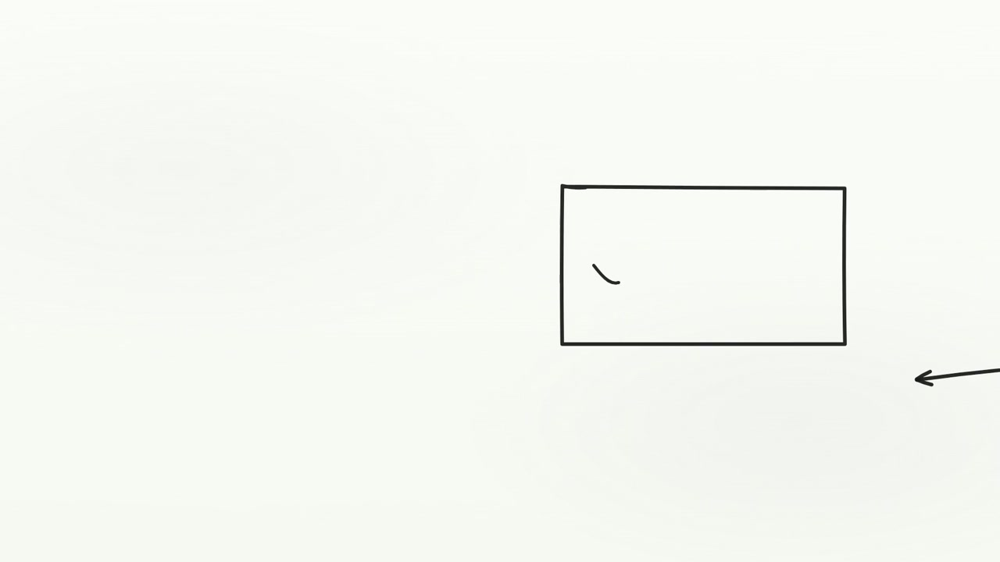
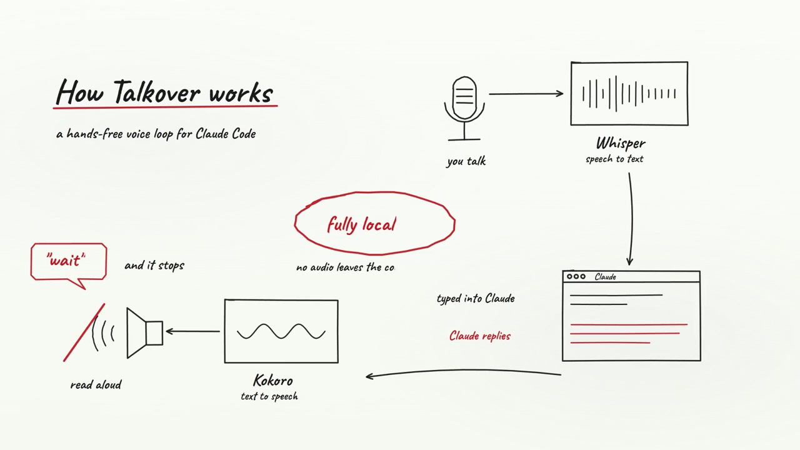

Explain
One workflow, followed from input to response.
Whiteboard films
An animated whiteboard explanation of the Talkover workflow: speech becomes text, the coding agent answers, and the response is spoken back.
One workflow, followed from input to response.
A whiteboard built around the actual sequence.
The product documentation is the source.

